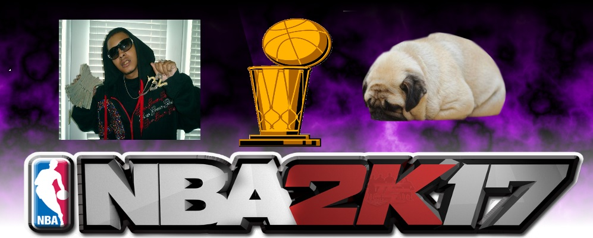

Just Ballin'
Just a quick picture I made with PAINT.net. I figured it'd be pretty cool if I showed that off. I'd say it's pretty dope. It really signifies not much but I thought I nailed it. Also who doesn't love pugs. This pug reminded me of doing school work so it seemed fitting.
This is about to be a table because I can make them now.
| Name | Occupation |
| Gucci Mane | Cowboy |
| Rae Sremmurd | Black Beatle |
My favorite part about the labs was definitely the PAINT.net stuff because now I can make all these different pictures.